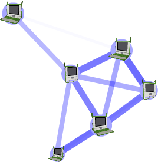
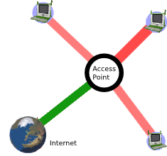

| Au-delà des Activités | Index | Se connecter |
Un réseau informatique est un groupe d'ordinateurs connectés entre eux.
Les réseaux sont habituellement décrits par leur taille : un réseau local ("local-area network" ou LAN) couvre un petit secteur géographique, comme une maison, un bureau ou un immeuble ; un réseau étendu ("wide-area network" ou WAN) couvre un secteur géographique relativement grand (comme d'une ville à une autre ville ou encore d'un pays à un autre pays) ; un réseau métropolitain ("metropolitan-area network" ou MAN) permet à de multiples réseaux locaux de se connecter les uns aux autres, mais ne leur permet pas de s'étendre au-delà des frontières de leur village, ville, cité ou secteur.
Il peut arriver que des réseaux soient décrits via le matériel qui leur permet de se connecter comme un satellite, une fibre optique, un cable Ethernet, sans fil ("wireless"), etc. Certains réseaux utilisent des connexions physiques - des câbles - alors que d'autres utilisent des ondes radio - sans fil.
Un réseau peut aussi être décrit selon ses relations fonctionnelles : les réseaux client-serveur ou pair-à-pair ("peer-to-peer") en sont de bons exemples.
Enfin, il est possible de décrire des réseaux selon leur typologie, c'est-à-dire selon les relations logiques qu'entretiennent différents dispositifs. Par exemple : en bus, en étoile, maillé et en arbre.
Un réseau typique XO OLPC est un réseau local, sans fil, pair-à-pair et maillé. Cependant, le XO accepte (directement ou indirectement) une variété de réseaux.
Les scénarios les plus communs utilisent tous des radios incorporées sans fil :

Réseau maillé simple

Réseau en infrastructure
Réseau via un serveur d'école
Une partie du modèle de déploiement OLPC fonctionne via des serveurs d'écoles (School Server). Ceux-ci sont conçus pour fournir une passerelle vers Internet, stocker localement des contenus, effectuer des sauvegardes, plus d'autres fonctions. Aussi importants que puissent être tous ces services, leur rôle majeur est de pouvoir supporter un réseau local. Sans serveur d'école, le plus grand réseau ne peut supporter plus d'une vingtaine d'ordinateurs portables. Chaque serveur d'école peut, quant à lui, en supporter jusqu'à environ 120.
Les raisons en sont les suivantes :
Internet consiste en une interconnexion mondiale de réseaux gouvernementaux, académiques, publics et privés. Internet transporte diverses sources d'information et de services, comme le courrier électronique, le chat, des documents, des jeux en ligne, ainsi que le World Wide Web (WWW).
Bien que l'écosystème OLPC fournisse un réseau sans fil auto-configuré et local, la connectivité à Internet est quelque chose qui nécessite d'être mis au point au cas par cas.
Réseau maillé
Un réseau maillé sans fil est un réseau de communication qui est composé de nœuds radio qui peuvent transmettre des informations vers d'autres nœuds. Ainsi, deux nœuds qui ne sont pas en contact radio direct peuvent communiquer avec d'autres nœuds en utilisant les noeuds qui sont entre eux. La zone de couverture collective de ces noeuds radio fonctionnant comme un unique réseau devient un nuage maillé (cloud).
Mode infrastructure
Connexion à un réseau via un point d'accès WiFi (sans fil), par exemple 802.11b/g.
Mode maillé
La connexion à un réseau maillé (le protocole d'acheminement de maille utilisé par un ordinateur OLPC - maille OLPC - est basé sur le standard 802.11s qui est en cours de développement par le groupe de travail 802.11s [http://www.ieee802.org/11/Reports/tgs_update.htm].)
Mode maillé simple
Réseau maillé entre des ordinateurs portables sans serveur d'école.
Mode maillé via serveur d'école
Réseau maillé relayé par un serveur d'école.
Canal de maille
Les ordinateurs portables utilisent trois canaux de communication : 1, 6 et 11 ; dans un réseau maillé simple, les ordinateurs ne peuvent voir que les autres ordinateurs utilisant le même canal ; dans un réseau maillé via un serveur d'école, les ordinateurs de tous les canaux sont visibles.
Point d'accès (AP - Access Point)
Un point d'accès est un dispositif qui connecte entre eux des dispositifs de communication sans fil afin de former un réseau sans fil. L'AP permet généralement de se connecter à un réseau câblé, et peut retransmettre des données entre des dispositifs sans fil et des dispositifs câblés. Plusieurs AP peuvent se lier pour former un plus grand réseau.
Point de portail de maille
C'est une maille qui sert de passerelle (portail) pour un réseau extérieur au réseau maillé.
| Au-delà des Activités | Index | Se connecter |